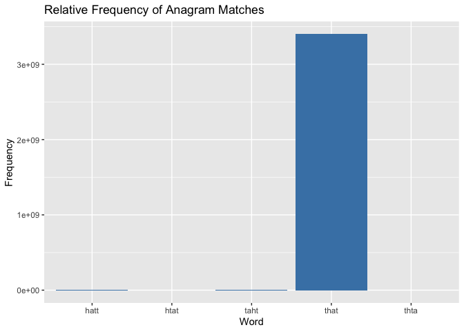

The “anagram” package introduces an innovative approach to anagram detection by incorporating frequency information into its core functionality. This feature enhances the package’s utility by providing insights into the relative occurrence of anagrams within a corpus of words. By considering the frequency of each word in the corpus, the package allows users to analyze the prevalence and significance of different anagrams, thus facilitating more nuanced linguistic investigations.
In addition to its frequency-aware capabilities, the “anagram” package offers essential functionalities for anagram detection within words. Initially, it verifies whether two given words are anagrams, ensuring they share identical letters arranged differently. Furthermore, the package extends its capabilities to check for anagrams within a group of words and to identify anagram subsets within a specified subset of words, considering combinations of characters of a specified minimum length. This versatile tool, designed for straightforward linguistic analysis, accepts a character vector of words as input and efficiently discerns anagram relationships, catering to various user needs.
Installation
You can install the development version of anagram from GitHub with:
# install.packages("devtools")
devtools::install_github("numbats/assignment-3-package-completion-ajen0022")Example
In this example, we demonstrate the usage of the anagramfinder_function by finding anagrams for the word “that” using the provided dictionary. We then print and plot the output to visualize the relative frequencies of the found anagrams.
Anagram Finder with Frequency Information
library(anagram)
# Call the anagramfinder_function
output <- anagramfinder_function("that", dictionary)
# Print the output
print(output)
#> Input word: that
#> Matches found: 5
#> Word Frequency
#> 10 that 3400031103
#> 68714 taht 191717
#> 107765 hatt 86981
#> 244037 thta 22068
#> 312336 htat 14109
# Plot the output
plot(output)
The output of the anagramfinder_function is an S3 object, a common data structure in R. S3 objects allow for organizing data into structured formats with associated methods for manipulation and analysis. In this case, the anagram_output class encapsulates the results of the Anagram Finder function, providing convenient access to the matched words and their frequencies.
Check if Two Words are Anagrams
This example demonstrates how to use the are_anagrams to check if two words are anagrams of each other. In this case, we check if the below given examples are anagrams or not.
library(anagram)
## Check if two words are anagrams of each other
words <- c("alert", "alter", "later")
are_anagrams(words)
#> [1] TRUE
# Example 2: Checking for anagrams within subsets
words <- c("listen", "silent", "hello", "world")
are_anagrams(words, subsets = TRUE)
#> [1] FALSEThe output will be TRUE, indicating that “alert”,“alter” and “later” are indeed anagrams of each other.
In the second example “listen and”silent” are anagrams of each other but “hello” and “world” are not anagrams of each other that is why the output shows FALSE.
Find Anagram Subsets
This example illustrates how to use the anagramsubset_function to find anagram subsets of minimal length within a set of words. Here, we find anagram subsets of length 3 within the words “tiger”, “right”, “tire”, “grit”, “git”, and “rite”.
library(anagram)
## Find anagram subsets of minimal length within a set of words
words <- c("tiger", "right", "tire", "grit", "git", "rite")
min_subset_length <- 3
anagram_subsets <- anagramsubset_function(words, min_subset_length)
print(anagram_subsets)
#> [1] TRUEThe output will be a boolean value (TRUE in this case), indicating whether anagram subsets meeting the specified minimum length requirement were found within the specified set of words.
These functions provide a convenient way to work with anagrams, whether you’re testing if words are anagrams or finding anagram subsets within a set of words.
Code of Conduct
Please note that this project is released with a Contributor Code of Conduct. By participating in this project you agree to abide by its terms.